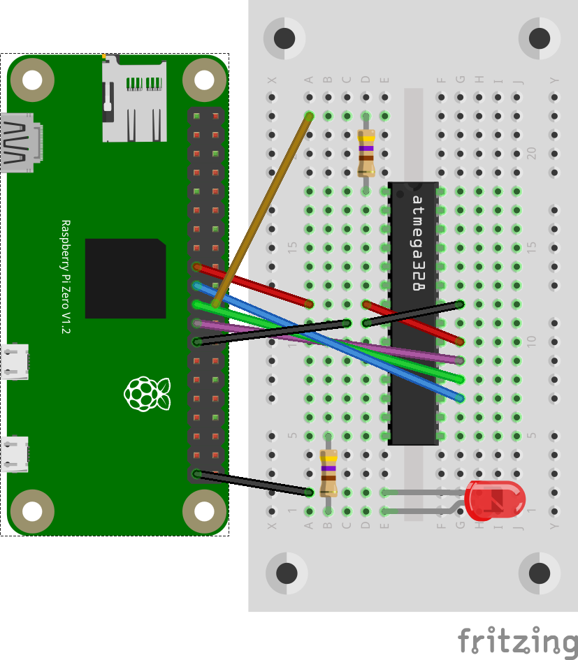
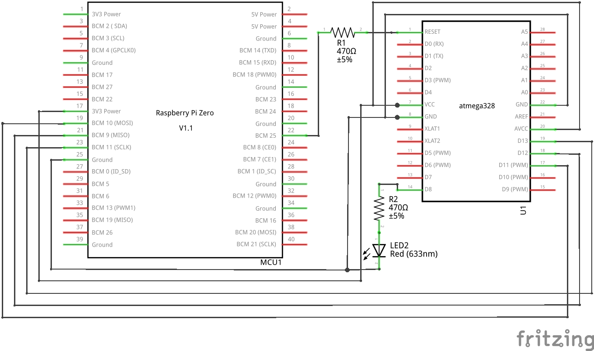

Wer mit einem ATmega328P in die Welt der Mikrokontroller-Programmierung einsteigen will hat eine Hürde. Wie kann ein Programm in den IC übertragen werden. Dieses Problem lässt sich aber ganz einfach mit einem Raspberry Pi lösen.
Beschreibung
Der ATmega328P ist ein sehr beliebtes ATmega Mikrokontroller System mit einigen GPIOs und Funktionen. Der IC kann für rund 2 Euro erworben werden. Auf den Raspberry Pi können Programme erstellt, übersetzt und schlussendlich auf den IC übertragen werden.
Anschluss
Der ATmega328P kann direkt an den SPI-Bus des Raspberry Pi angeschlossen werden. Für die Reset-Funktion wird allerdings noch der GPIO25 zusätzlich benötigt. Schließt man noch eine LED an einem Pin an, so kann man gleich die Programmierung und Funktion des Mikrokontrollers prüfen.
 
Kommunikation
sudo apt-get install avrdude
In der Konfigurationsdatei /etc/avrdude.conf kann die SPI-Taktfrequenz von 400 kHz auf 200 kHz reduziert werden.
programmer
id = "linuxspi";
desc = "Use Linux SPI device in /dev/spidev*";
type = "linuxspi";
reset = 25;
baudrate=200000;
;
Danach kann mit ‘avrdude’ der Chip Typ ausgelesen bzw. die Kommunikation geprüft werden.
sudo avrdude -c linuxspi -p m328p -P /dev/spidev0.0
avrdude: AVR device initialized and ready to accept instructions
Reading | ################################################## | 100% 0.00s
avrdude: Device signature = 0x1e950f (probably m328p)
avrdude: safemode: Fuses OK (E:FF, H:D9, L:62)
avrdude done. Thank you.
Programm
sudo apt-get install gcc-avr avr-libc
Nun kann man ein Programm erstellen, z.B. eine blinkende LED an Pin 14 bzw. PB0. Also Dateiname wird “main.c” verwendet.
#define F_CPU 1000000UL
#include <avr/io.h>
#include <util/delay.h>
#define LED _BV(PB0) // = (1 << PB0)
#define LED_DDR DDRB
#define LED_PORT PORTB
int main (void) {
LED_DDR = LED; // Set the LED pin PB0 as output
while (1) {
LED_PORT ^= LED; // Toggles the LED pin on port PB
_delay_ms(500);
}
}
Danach kann man eine ‘Makefile’ Datei erstellen, die alle Schritte und Parameter enthält:
MCU=atmega328p
CFLAGS=-g -Wall -mcall-prologues -mmcu=$(MCU) -Os
LDFLAGS=-Wl,-gc-sections -Wl,-relax
CC=avr-gcc
TARGET=main
OBJECT_FILES=main.o
all: $(TARGET).hex
clean:
rm -f *.o *.hex *.obj *.hex
%.hex: %.obj
avr-objcopy -R .eeprom -O ihex $< $@
%.obj: $(OBJECT_FILES)
$(CC) $(CFLAGS) $(OBJECT_FILES) $(LDFLAGS) -o $@
program: $(TARGET).hex
sudo avrdude -p $(MCU) -c linuxspi -P /dev/spidev0.0 -U flash:w:$(TARGET).hex
Der Aufrufe ‘make’ erzeugt nun das Programm als “main.hex” Datei und lädt es in den ATmega328P IC. Falls es nicht beim ersten Mal klappt, kann das Programm mit dem Aufruf ‘make program’ nochmals auf den IC geladen werden.
Reset-Pin Ansteuerung
Als Reset-Pin wird GPIO25 des Raspberry Pi benutzt. Dieser ist standardmäßig als Eingang mit einem Pull-down Widerstand (ca. 50 kOhm) beschaltet. Durch den internen Pull-up Widerstand des ATmega liegt am Reset-Pin eine Spannung von ca. 1,5 V an. Dies entspricht einem High-Pegel, da die Schwelle bei ca. 0,6 V liegt. Dadurch arbeitet der Mikrokontroller sein internes programmiertes Programm ab. Beim Übertragen eines neuen Programms wird GPIO25 als Ausgang mit Pegel Low aktiviert, um so den Reset-Pin auf Low zu ziehen. Danach wird er wieder zum Eingang.
Wird die Versorgungsspannung des Mikrokontrollers entfernt oder ausgeschaltet, so fällt der ATmega Pull-up Widerstand weg und am Reset-Pin liegt ein Low-Pegel an.
Beispielvideo